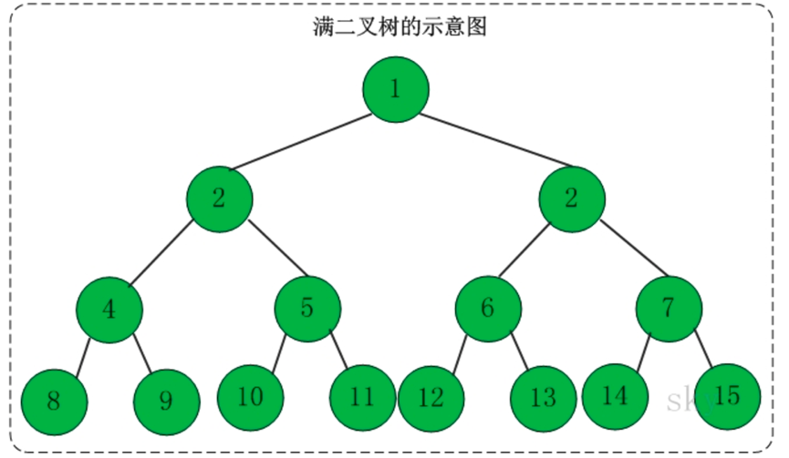

一、树的定义
树是一种数据结构，它是由n（n>=1）个有限结点组成一个具有层次关系的集合。
树具有的特点有：
（1）每个结点有零个或多个子结点
（2）没有父节点的结点称为根节点
（3）每一个非根结点有且只有一个父节点
（4）除了根结点外，每个子结点可以分为多个不相交的子树。
树的基本术语有：
若一个结点有子树，那么该结点称为子树根的“双亲”，子树的根称为该结点的“孩子”。有相同双亲的结点互为“兄弟”。一个结点的所有子树上的任何结点都是该结点的后裔。从根结点到某个结点的路径上的所有结点都是该结点的祖先。
结点的度：结点拥有的子树的数目
叶子结点：度为0的结点
分支结点：度不为0的结点
树的度：树中结点的最大的度
层次：根结点的层次为1，其余结点的层次等于该结点的双亲结点的层次加1
树的高度：树中结点的最大层次
森林：0个或多个不相交的树组成。对森林加上一个根，森林即成为树；删去根，树即成为森林。
二、二叉树
1、二叉树的定义
二叉树是每个结点最多有两个子树的树结构。它有五种基本形态：二叉树可以是空集；根可以有空的左子树或右子树；或者左、右子树皆为空。
2、二叉树的性质
性质1：二叉树第i层上的结点数目最多为2i-1(i>=1)
性质2：深度为k的二叉树至多有2k-1个结点（k>=1）
性质3：包含n个结点的二叉树的高度至少为(log2n)+1
性质4：在任意一棵二叉树中，若终端结点的个数为n0，度为2的结点数为n2，则n0=n2+1
3、性质4的证明
性质4：在任意一棵二叉树中，若终端结点的个数为n0，度为2的结点数为n2，则n0=n2+1
证明：因为二叉树中所有结点的度数均不大于2，不妨设n0表示度为0的结点个数，n1表示度为1的结点个数，n2表示度为2的结点个数。三类结点加起来为总结点个数，于是便可得到：n=n0+n1+n2 (1)
由度之间的关系可得第二个等式：n=n0*0+n1*1+n2*2+1即n=n1+2n2+1 (2)
将（1）（2）组合在一起可得到n0=n2+1
三、满二叉树、完全二叉树和二叉查找树
1、满二叉树
定义：高度为h，并且由2h-1个结点组成的二叉树，称为满二叉树

2、完全二叉树
定义：一棵二叉树中，只有最下面两层结点的度可以小于2，并且最下层的叶结点集中在靠左的若干位置上，这样的二叉树称为完全二叉树。
特点：叶子结点只能出现在最下层和次下层，且最下层的叶子结点集中在树的左部。显然，一棵满二叉树必定是一棵完全二叉树，而完全二叉树未必是满二叉树。
面试题：如果一个完全二叉树的结点总数为768个，求叶子结点的个数。
由二叉树的性质知：n0=n2+1，将之带入768=n0+n1+n2中得：768=n1+2n2+1，因为完全二叉树度为1的结点个数要么为0，要么为1，那么就把n1=0或者1都代入公式中，很容易发现n1=1才符合条件。所以算出来n2=383，所以叶子结点个数n0=n2+1=384。
总结规律：如果一棵完全二叉树的结点总数为n，那么叶子结点等于n/2（当n为偶数时）或者(n+1)/2（当n为奇数时）
3、二叉查找树
定义：二叉查找树又被称为二叉搜索树。设x为二叉查找树中的一个结点，x结点包含关键字key，结点x的key值计为key[x]。如果y是x的左子树中的一个结点，则key[y]<=key[x]；如果y是x的右子树的一个结点，则key[y]>=key[x]
在二叉查找树种：
（1）若任意结点的左子树不空，则左子树上所有结点的值均小于它的根结点的值。
（2）任意结点的右子树不空，则右子树上所有结点的值均大于它的根结点的值。
（3）任意结点的左、右子树也分别为二叉查找树。
（4）没有键值相等的结点。